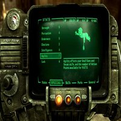
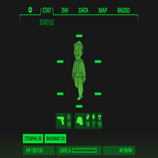
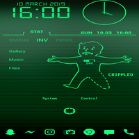

Inspiration and references for this site
Fallout is one of my favorite franchises and fandoms. I was always so intruiged by its
lore and environment. I love the handy apple watch precursor you get in the game called a
"Pip-Boy". The screen i love, how it looks so i thought about doing a web page like it.
Pics for references


